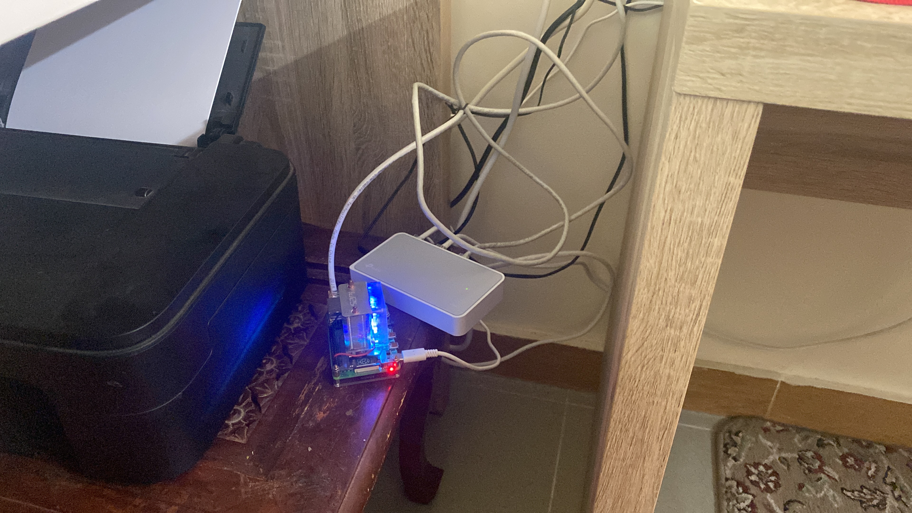
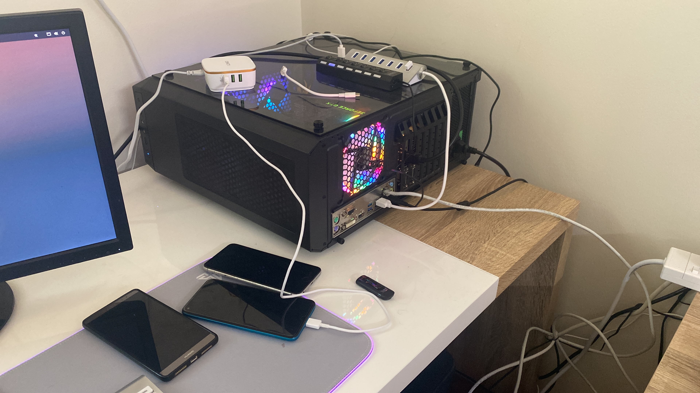
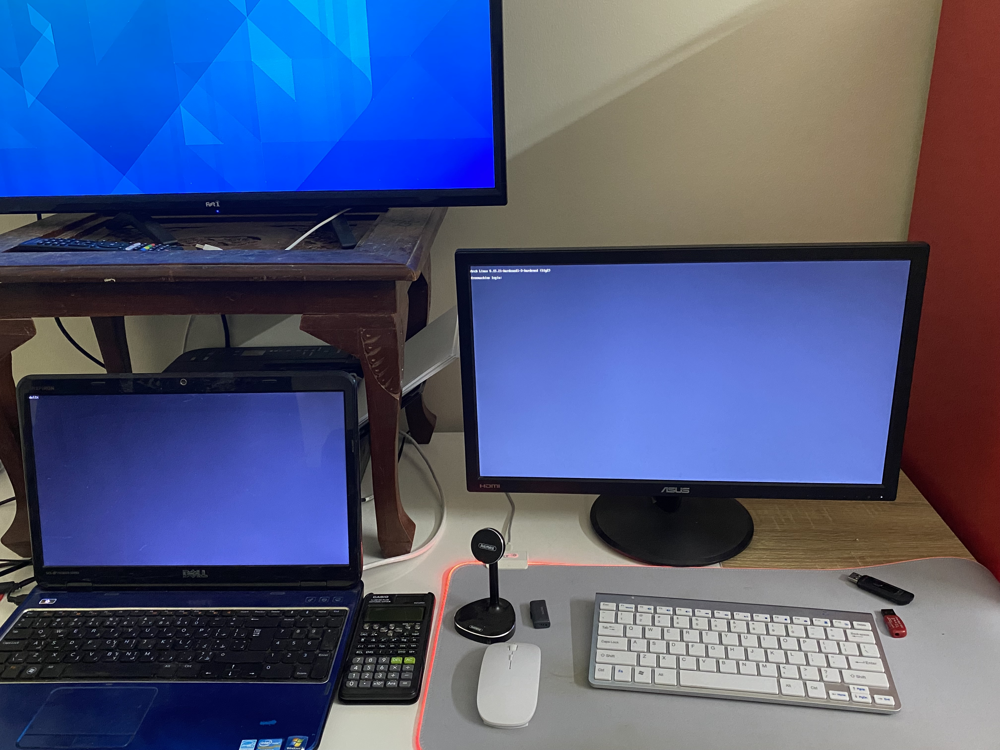
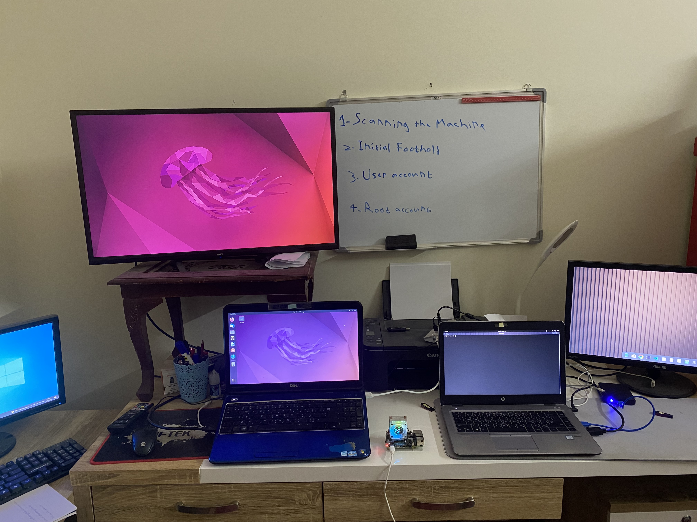

The Pi
Portable power

There are times when I don't trust my intuition and I go extra miles in seperating my networks, when in this case, I slap the pi with OpenWrt and put on the switch and off we go with safer browsing and seeding.
Portable power

There are times when I don't trust my intuition and I go extra miles in seperating my networks, when in this case, I slap the pi with OpenWrt and put on the switch and off we go with safer browsing and seeding.
Where it felt real

The beginning of my daily use. The adapter isn't original and is out of power. The batteries aren't original and they only last for at max an hour. But it feels just right to use it.
I was right

I always have been avoiding PCs, I was more of a console guy, and I still use a PS4 even for some computer tasks. But I as always I had the curiosity, after all I see nice setups and I think well.. maybe there is something else to it other than gaming, but it using it felt like having a liability on my desk, I didn't like it, but with all honesty, I think I would have enjoyed it if I had those mechanical keyboards and more lighting and other PC stuff, but it didn't seem to be worth it, so I dittched it and was back to using portable devices.
The peak

I used these setup for multiple tasks including penetration, development and most importantly movies. this was a nice setup. But I hated the mac like keyboard and mouse... thinking they were slik, but even after months of throwing them away I still feel the pain in my fingers.
where they gather

After some experiments here and there I decided to leave eveything where they were best at. The windows being windows, which is a machine waiting to get f$%#ed. ubuntu for stable use. raspi for the fun of it. And arch for an i7 device where eveything feels just good and easy and fast.